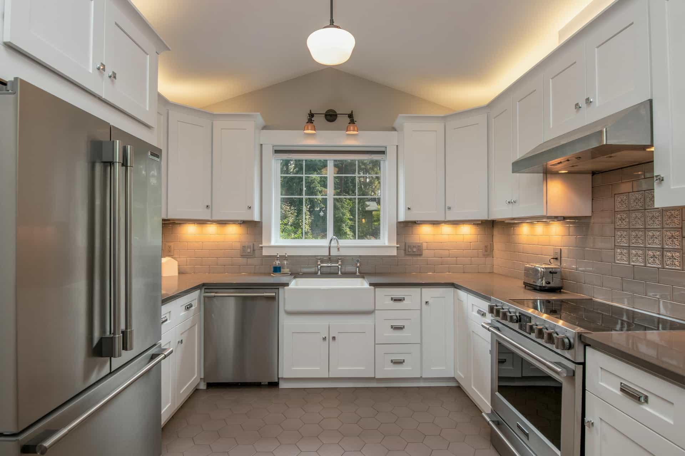
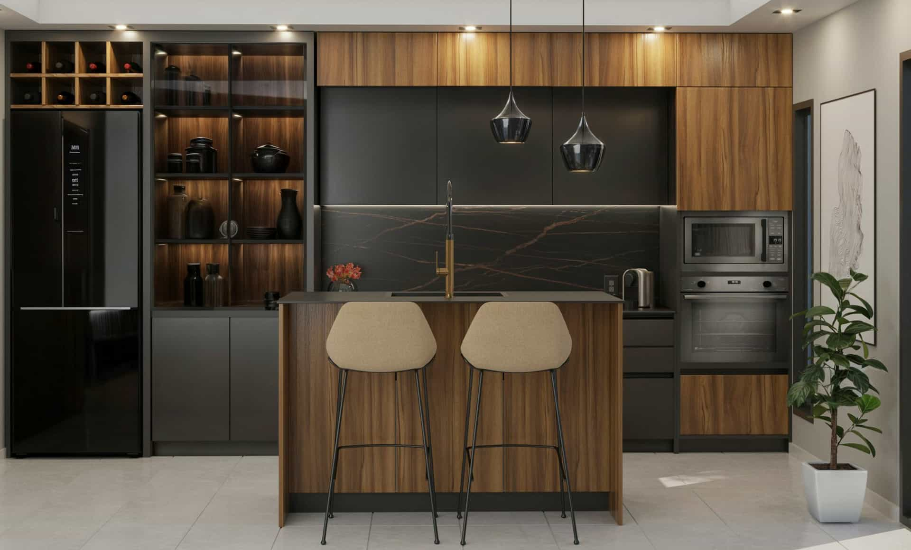

Tile material and pattern
Ask about tile type, size, pattern, layout, edge treatment, grout color, and surface compatibility.
Explore independent provider options for backsplash updates, tile surfaces, sink areas, faucets, hardware, lighting details, and finish coordination.
 Fixture layer
Fixture layer
Backsplash, tile, and fixture updates can be compact but detail-heavy. Kavera helps homeowners compare provider options by tile material, surface prep, fixture compatibility, lighting details, and finish coordination.
Compare how providers discuss tile material, pattern, grout, layout, and surface preparation.
Ask how sink areas, faucets, lighting, hardware, and finish compatibility are handled.
Review timeline, access, material responsibility, warranty discussion, and quote clarity directly.
Detail-driven updates can affect the visual balance of the whole kitchen. Use these prompts when reviewing independent provider conversations.
Ask about tile type, size, pattern, layout, edge treatment, grout color, and surface compatibility.
Discuss wall condition, old material removal, waterproofing needs, substrate preparation, and cleanup.
Compare how providers address faucets, sink areas, hardware finish, lighting, and existing plumbing or electrical conditions.
Ask how tile, grout, metal finishes, cabinet hardware, countertop color, and lighting tone are coordinated.
Review whether material, prep, labor, fixtures, removal, installation, and possible changes are separated clearly.
Verify licensing, insurance, warranties, project terms, material responsibility, and timeline directly with providers.
Detail updates depend on material and finish decisions. A clean provider conversation should separate tile surface, grout, sink area, faucet compatibility, lighting, and hardware coordination.
Ask each independent provider how surface prep, material choice, fixture compatibility, and finish coordination affect scope and estimate detail.

Grout
Faucet

LightingThese rows are not provider ratings. They are comparison factors homeowners can use when discussing backsplash, tile, fixture, and finish details with independent providers.
Confirm material responsibility, fixture compatibility, surface prep, timeline, warranties, and provider credentials directly with each independent provider.
These answers help homeowners keep detail-focused kitchen provider comparison clear, safe, and focused on direct verification.
Request optionsStart with your detail-focused kitchen scope, then review independent provider options and verify material, prep, timing, quote terms, and warranties directly.